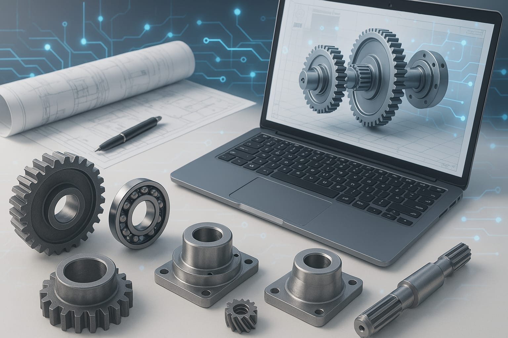

Ben Moulay Zeyn
Uçak Mühendisliği öğrencisiyim. Mekanik tasarım, makine geliştirme, teknoloji ve yazılım alanlarında deneyimliyim. Bu alanlarda projeler geliştiriyorum. Çalışmalarımı burada paylaşıyorum.


Uçak Mühendisliği öğrencisiyim. Mekanik tasarım, makine geliştirme, teknoloji ve yazılım alanlarında deneyimliyim. Bu alanlarda projeler geliştiriyorum. Çalışmalarımı burada paylaşıyorum.
Niamey, Nijerliyim ve her zaman fırsatları azim ve kararlılıkla en iyi şekilde değerlendirdim. Ortaokul yıllarımdan itibaren prestijli burslar kazandım; önce ülkemin en iyi okullarından birine kabul edildim, ardından eğitimime Türkiye’de devam ederek zengin bir uluslararası ortamda kendimi geliştirdim.
Şu anda Uçak Mühendisliği lisans eğitimime devam ediyorum. İnovasyona büyük bir tutku duyuyor, havacılık sektörüne anlamlı katkılar sağlamak için becerilerimi ve deneyimlerimi en iyi şekilde kullanmayı hedefliyorum.
Mekanik tasarım, insansız hava araçları, yazılım ve web geliştirme alanlarında yetkinim. SolidWorks, Matlab gibi tasarım, modelleme ve simülasyon yazılımları konusunda yetkinlik ve deneyim sahibiyim. Aynı zamanda HTML, CSS ve JavaScript kullanarak web projeleri geliştiriyorum.
Hang glider (Yelken Kanat) pilotluğu (35 uçuş saati) ve RC uçak yapımı ve pilotluğu (20 uçuş saati) sertifikalarına sahibim.
Dil olarak, Fransızca, Türkçe ve Zarma C1 seviyesinde iken, İngilizce, Arapça ve Hausa dillerinde B2 seviyesindeyim. Havacılık ve teknoloji alanında inovatif projeler geliştirerek sektörde fark yaratmayı amaçlıyorum.
Ürünlerinizi veya projelerinizi görselleştirmeniz ve prototip oluşturmanız için kapsamlı 3D tasarım ve modelleme hizmetleri sunuyorum. CAD yazılımlarıyla detaylı ve işlevsel tasarımlar, ürün geliştirme sürecinin her aşamasında size destek olur.
Özel ihtiyaçlara yönelik, dayanıklı ve verimli makine parçaları tasarlanmaktadır. Her türlü endüstriyel uygulama için yüksek kalite ve güvenilirlikte parçalar geliştirilmekte; tasarımlar, kullanılacak malzemeye göre mukavemet hesaplamaları ve analizleri yapılarak optimize edilmektedir.
Otonom makinelerin tasarımı ve projelerin geliştirilmesi konusunda kapsamlı çözümler sunulmaktadır. Mekanik tasarım, analizler, elektronik donanım ve yazılım entegrasyonu bir arada gerçekleştirilerek, yenilikçi ve verimli otonom sistemler üretilmektedir. Her aşamada performans ve güvenilirlik odaklı çalışmalar ile özel ihtiyaçlara yönelik çözümler geliştirilir.
İnsansız hava araçları (İHA) ve drone teknolojileri üzerine kapsamlı proje geliştirme hizmetleri sunulmaktadır. Tasarım, prototip oluşturma, yazılım entegrasyonu ve test aşamalarını içeren projelerle sektöre yenilikçi ve verimli çözümler sağlanmaktadır.

Tuğrul İHA, hedef tespiti, takibi, yük taşıma ve yükü hedefe bırakma gibi görevler için geliştirilen otonom bir insansız hava aracıdır. MH-115 kanat profili, optimize edilmiş aerodinamik yapısı, güçlü motor sistemi ve elektronik donanım entegrasyonu ile boş ağırlığının yüzde 100'ü kadar faydalı yük taşıyabilir ve yüksek bir manevra kabiliyeti sunar. Mekanik tasarım, yapısal, aerodinamik analizler ve yazılım entegrasyonu sayesinde güvenilir ve stabil bir uçuş performansı sağlar. Gelecekte, gelişmiş sensör entegrasyonu ve yapay zeka destekli sistemlerle kabiliyetlerinin artırılması hedeflenmektedir.
Bana aşağıdaki iletişim bilgileri üzerinden ulaşabilirsiniz: